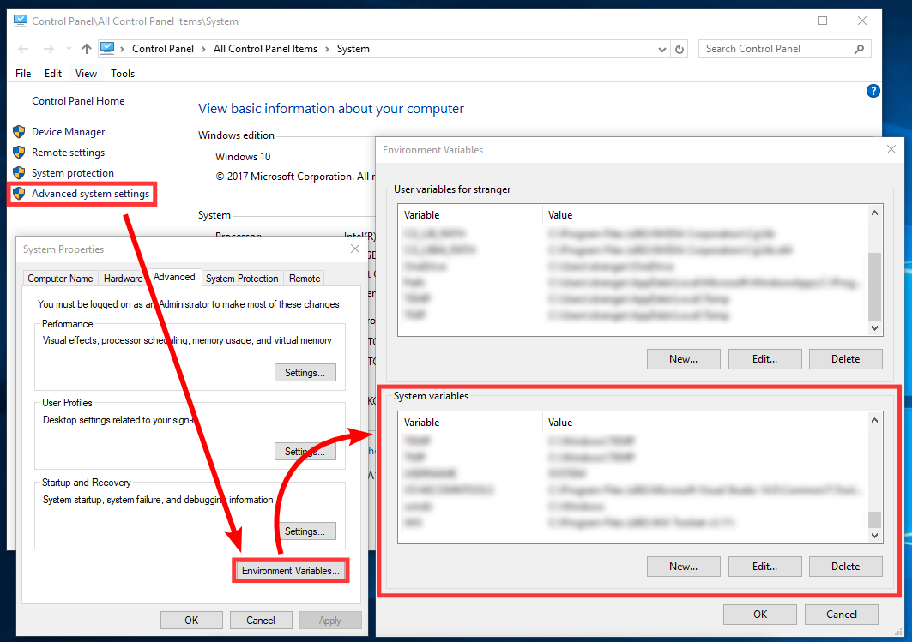
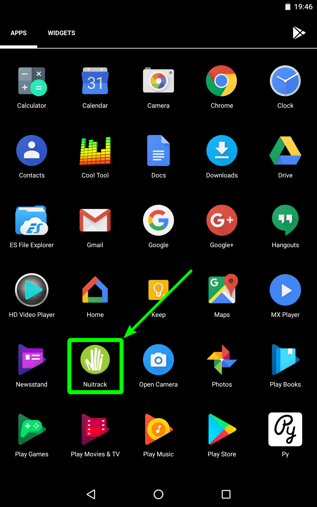
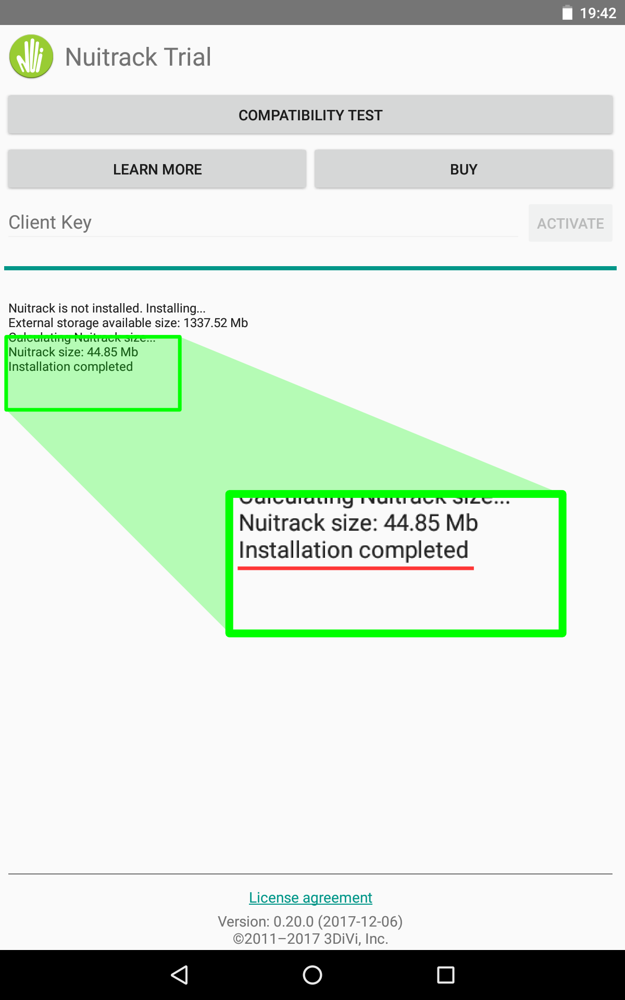

Windows
Supported Windows versions: Windows 7, Windows 8, Windows 10.
To install Nuitrack on Windows, follow the steps below:
-
Download and run nuitrack-windows-x86.exe (for Windows 32-bit) or nuitrack-windows-x64.exe (for Windows 64-bit). Follow the instructions of the Nuitrack setup assistant.
-
Re-login to let the system changes take effect.
-
[Required] Make sure that you have installed Microsoft Visual C++ Redistributable for Visual Studio on your computer. If not, install this package depending on your VS version and architecture:
-
If you observe any issues with automatic setup, set up environment variables manually (you can skip this step if the environment variables have been set automatically):
- Create an environment variable with the name of NUITRACK_HOME and value of <install-folder>\nuitrack.
- Add <install-folder>\nuitrack\bin to the PATH environment variable.
- Note
- To add a new environment variable or change the existing environment variable manually, use the "Environment Variables" dialog. To access it, open the "System" dialog (Win + Break), then select Advanced system settings → Environment Variables...

Editing environment variables in Windows 10
-
[Optional] To use OpenNI 1.5 API, register the Nuitrack dynamic module for OpenNI 1.5:
32-bit:
"C:\Program Files (x86)\OpenNI\Bin\niReg.exe" -r <install-folder>\nuitrack\bin\libnuitrack_ni.dll <install-folder>\nuitrack\data
64-bit:
"C:\Program Files\OpenNI\Bin64\niReg64.exe" -r <install-folder>\nuitrack\bin\libnuitrack_ni.dll <install-folder>\nuitrack\data
- Note
- To get started with a new device, you must first install the drivers for it. Contact the device vendor to get the drivers.
Ubuntu Linux
Supported Ubuntu version is 14.04 and above. Supported architectures are AMD64 and ARM 32-bit.
To install Nuitrack on Ubuntu, follow the steps below:
-
Download one of the following Debian packages, depending on the target architecture:
-
Install the downloaded package using the following command:
sudo dpkg -i <downloaded-package-name>.deb
-
Log out to let the system changes take effect.
-
Check that the environment variables NUITRACK_HOME and LD_LIBRARY_PATH are set correctly using the following commands:
echo $NUITRACK_HOME
echo $LD_LIBRARY_PATH
NUITRACK_HOME should be equal to /usr/etc/nuitrack. LD_LIBRARY_PATH should include /usr/local/lib/nuitrack path.
If the environment variables are empty, set them manually using the following commands (as root):
echo "export NUITRACK_HOME=/usr/etc/nuitrack" > /etc/profile.d/nuitrack_env.sh
echo "export LD_LIBRARY_PATH=/usr/local/lib/nuitrack" >> /etc/profile.d/nuitrack_env.sh
. /etc/profile.d/nuitrack_env.sh
-
[For Ubuntu 18.04] Install the libpng12-0 package.
- Note
- If you see "ERROR: Couldn't open device ..." message when trying to use Nuitrack, try to set permissions for USB devices with the following command:
sudo chmod -R 777 /dev/bus/usb/
Android
-
Allow your device to install applications from unknown sources. To do this, go to Settings → Security and tick "Unknown sources".
-
Download Nuitrack.apk and install it. To install the APK package, locate it in a file manager, open and tap "INSTALL".
-
Launch the Nuitrack application.

-
Wait for Nuitrack installation. If the Nuitrack installation is successful, the message will be displayed as shown in the picture below:

License Activation
There are two Nuitrack versions: Nuitrack Trial and Nuitrack Pro.
Nuitrack Trial is free and has the time limit. This Nuitrack version stops working after running for three minutes, so you need to restart it. To use Nuitrack Trial, you have to download Nuitrack runtime, run the activation tool and enter the trial license key. You can get the trial license at our website or generate a trial key in your personal account. To generate the key in your account, go to the tab “Licenses”, click “Activate” in the box “Trial licenses” and then click “Generate”. Nuitrack Trial is intended for demo and evaluation purposes only. Trial license is not linked to a sensor but it’s linked to your PC.
Nuitrack Pro is for commercial applications. It allows to develop and sell applications based on Nuitrack. There are two types of Nuitrack Pro licenses: online and perpetual.
-
Nuitrack Pro Online is a cross-platform license, which is not linked to a sensor or PC and fully portable. Online subscription requires periodic connection to the Internet.
-
Nuitrack Pro Perpetual is a cross-platform license, which is linked to your sensor. This license has unlimited period of validity and you don’t have to connect to the Internet after activation.
You can purchase Nuitrack Pro Online and Nuitrack Pro Perpetual at our website. You can manage all your Nuitrack licenses (Trial and Pro) in your personal account.
3D Sensor Specific Requirements
All Sensors
-
Make sure that the date and time settings on your device are correct.
-
[For Windows 10] Make sure that you allowed apps to access your camera: select Settings → Privacy → Camera and turn on "Allow apps to access your camera".
-
[For Ubuntu and Nuitrack v0.28.0 or later] If you installed the .deb package and encounter the following error:
WARNING: Can not load library module: /usr/etc/nuitrack/middleware/libNuitrackModule.so
ERROR: Empty factory for DepthProvider
it can indicate that the libcurl4-openssl-dev package is not installed to your system. Run the following command to check the presence of this package:
ldd /usr/etc/nuitrack/middleware/libNuitrackModule.so | grep curl
If you see the output libcurl.so => not found, install the package by executing the command:
sudo apt-get install libcurl4-openssl-dev
Kinect V1
To install the driver for Kinect V1, download Kinect SDK v1.8 and follow the Install Instructions.
- Note
- If you use Windows 10, we recommend to run KinectSDK-v1.8-Setup.exe in compatibility mode for Windows 8
Kinect V2
Starting from v0.24.0, Nuitrack supports Kinect V2 on Windows (64-bit) and Linux x64. To install the driver for Kinect V2, download Kinect SDK v2.0 and follow the Install Instructions.
- Warning
- Kinect SDK v2.0 does not support 32-bit version of Windows.
Intel® RealSense™ D400 Series Depth Cameras
Windows/Linux
- Supported OS versions: Windows 8.1, Windows 10 and Ubuntu 14.04 or higher.
- Before using the sensor, you need to download and install Intel® RealSense™ SDK 2.0 for Windows or for Linux.
- Supported camera firmware version: 5.8.15 or higher. To update the camera firmware, please, download the latest firmware from the official Intel website.
Android
Support for RealSense on Android was added in Nuitrack v0.26.0.
-
Recommended RealSense D415/D435 firmware version is 5.11.1.0
-
Rooted and non-rooted devices can be used.
-
Read permission for a root folder is required. You can check the permissions using any file manager, for example, ES File Manager: if the "/" folder is empty, then read permissions for the root folder aren't granted in the current firmware version of your Android device.
-
USB-OTG support is required.
-
RealSense D415 and D435 were tested with the following Android devices:
-
Odroid XU3 (Android 4.4.4 Kitkat) (rooted)
-
Samsung Galaxy S4 (Android 5 Lollipop) (non-rooted)
-
Samsung Galaxy S5 (Android 6 Marshmallow) (non-rooted)
-
Samsung Galaxy S6 (Android 7 Nougat) (non-rooted)
-
Samsung Galaxy S8/S8+ (Android 8 Oreo) (non-rooted)

 1.8.6
1.8.6